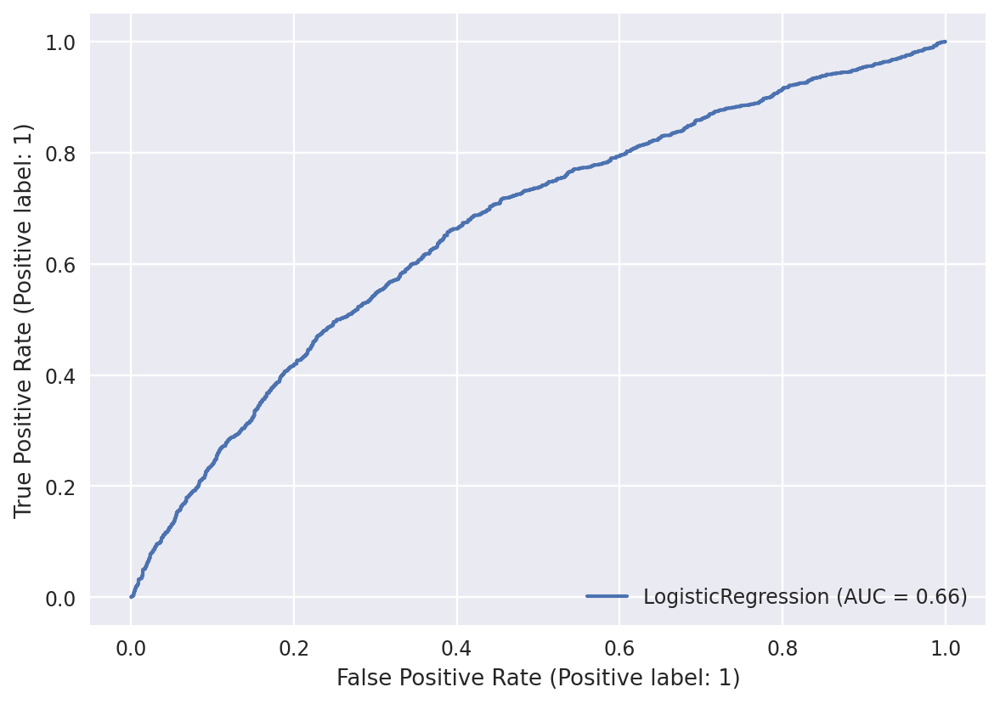
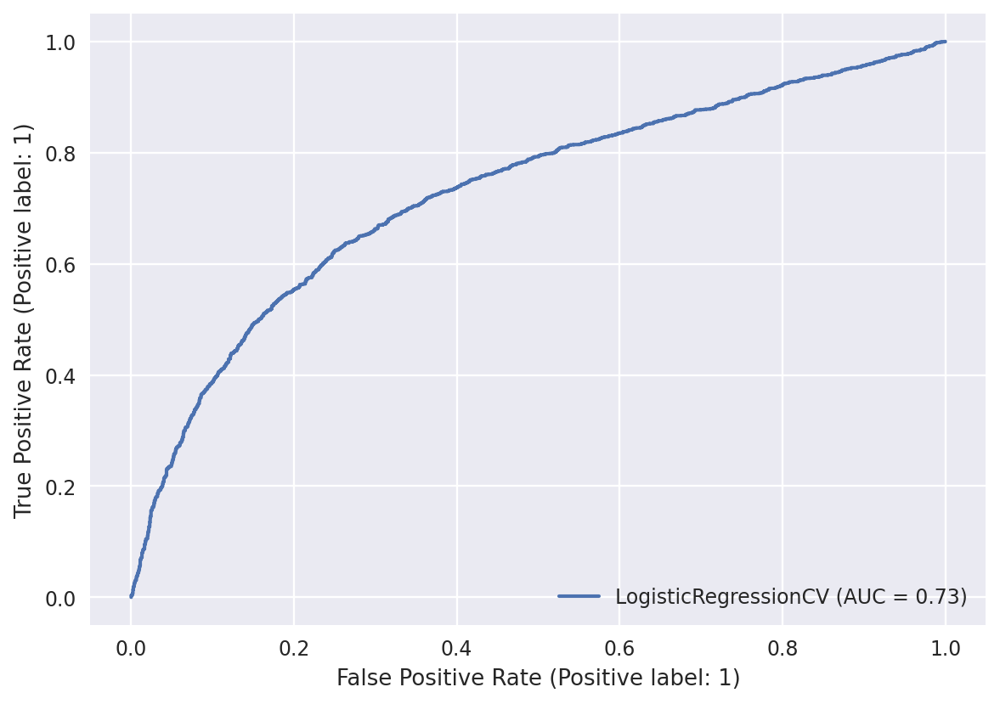
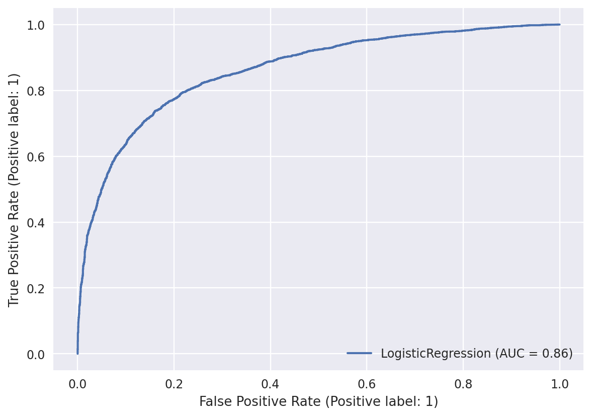
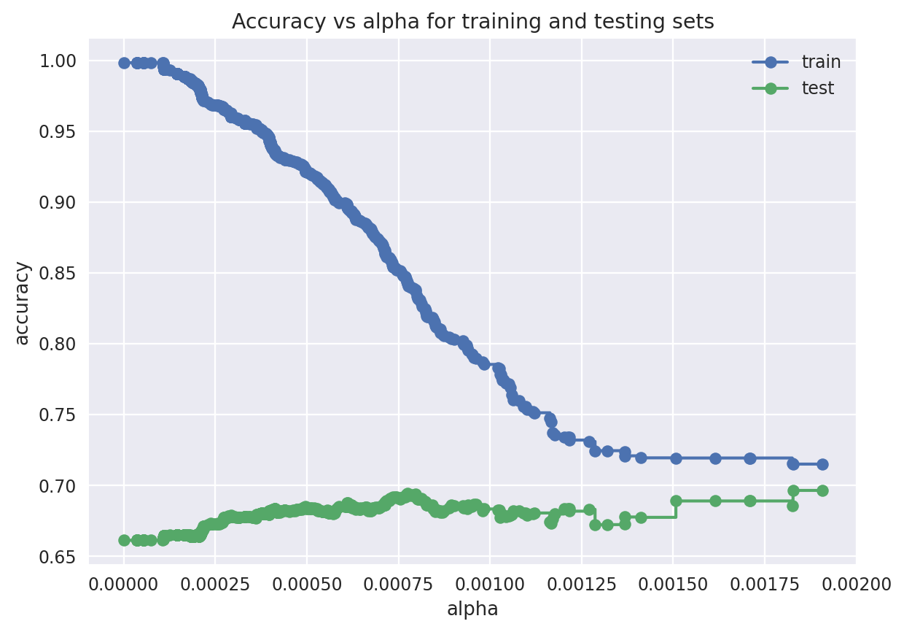
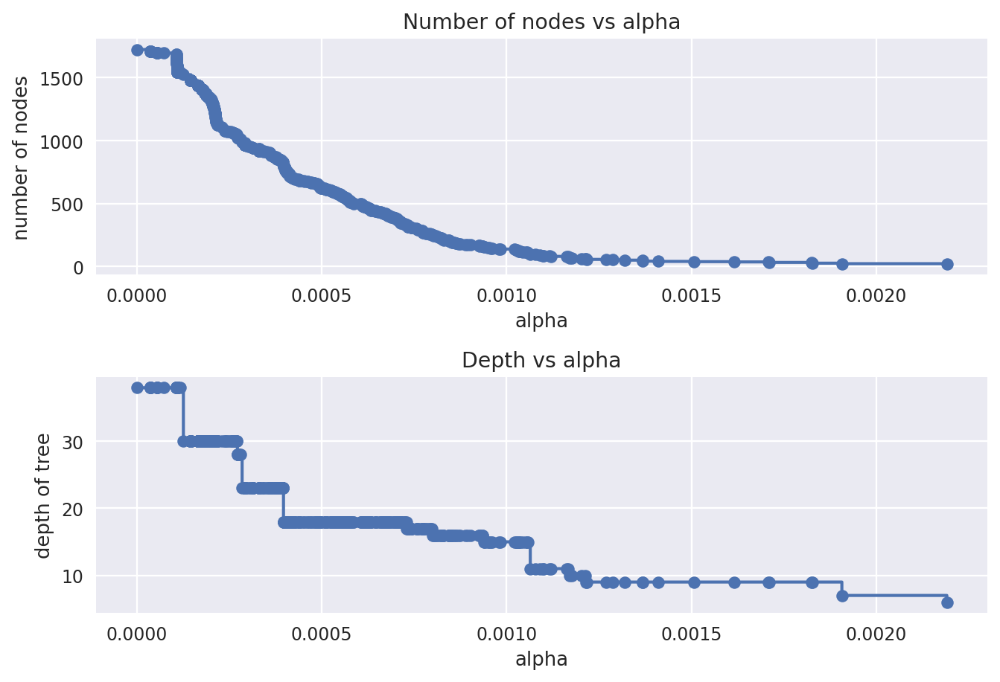
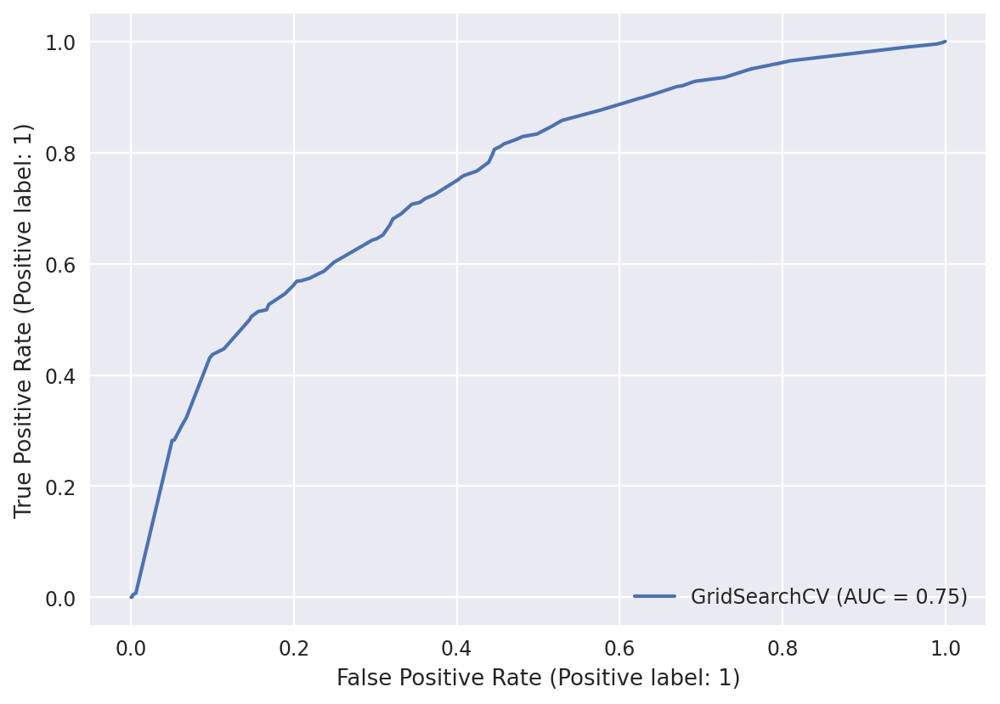

Code
X, y = load_all_images(classes=['sunny', 'cloudy'], pixels=PIXELS)
len(X)12976import pickle
import matplotlib.pyplot as plt
import numpy as np
from PIL import Image
from scipy.stats import uniform, randint
from matplotlib.ticker import MultipleLocator, AutoMinorLocator
import xgboost as xgb
from sklearn.model_selection import (
KFold,
GridSearchCV,
RepeatedKFold,
cross_val_score,
train_test_split,
RandomizedSearchCV
)
from sklearn.linear_model import LogisticRegression, LogisticRegressionCV
from sklearn.metrics import accuracy_score, RocCurveDisplay
from sklearn.tree import DecisionTreeClassifier, plot_tree
from sklearn.ensemble import RandomForestClassifier
from sklearn.neighbors import KNeighborsClassifier
from sklearn.preprocessing import StandardScaler
from sklearn.ensemble import BaggingClassifier
from sklearn.pipeline import make_pipeline
from utils import load_all_images, predict_image
# the number of height & width pixels to resize images to
PIXELS = 50sunny vs. cloudyModel accuracy: 0.633
Model accuracy: 0.787
Model accuracy: 0.678
Model accuracy: 0.633
Model accuracy: 0.787
train_scores = [clf.score(X_train, y_train) for clf in clfs]
test_scores = [clf.score(X_test, y_test) for clf in clfs]
fig, ax = plt.subplots()
ax.set_xlabel("alpha")
ax.set_ylabel("accuracy")
ax.set_title("Accuracy vs alpha for training and testing sets")
ax.plot(ccp_alphas[:-1], train_scores[:-1], marker="o", label="train", drawstyle="steps-post")
ax.plot(ccp_alphas[:-1], test_scores[:-1], marker="o", label="test", drawstyle="steps-post")
ax.legend()
# plt.grid(True, which='minor')
# plt.gca().xaxis.set_minor_locator(AutoMinorLocator())
plt.show()
clfs = clfs[:-1]
ccp_alphas = ccp_alphas[:-1]
node_counts = [clf.tree_.node_count for clf in clfs]
depth = [clf.tree_.max_depth for clf in clfs]
fig, ax = plt.subplots(2, 1)
ax[0].plot(ccp_alphas, node_counts, marker="o", drawstyle="steps-post")
ax[0].set_xlabel("alpha")
ax[0].set_ylabel("number of nodes")
ax[0].set_title("Number of nodes vs alpha")
ax[1].plot(ccp_alphas, depth, marker="o", drawstyle="steps-post")
ax[1].set_xlabel("alpha")
ax[1].set_ylabel("depth of tree")
ax[1].set_title("Depth vs alpha")
fig.tight_layout()
# create DecisionTree model
dt_model = DecisionTreeClassifier()
# create 5-Fold CV
kfold = KFold(5, shuffle=True)
# GridSearch
dt_search = GridSearchCV(
dt_model,
param_grid={
"max_depth": range(10, 26, 2),
"min_samples_split": range(2, 11, 2),
"ccp_alpha": [0.00025, 0.0005, 0.00075, 0.001, 0.00125, 0.0015, 0.00175],
},
cv=kfold,
n_jobs=-1,
verbose=3,
scoring="accuracy",
)
dt_result = dt_search.fit(X_train, y_train)(0.6835829743077494,
{'ccp_alpha': 0.001, 'max_depth': 18, 'min_samples_split': 2})We saw from the above figure the best ccp_alpha value is in the interval [0.000, 0.002]
Model accuracy: 0.679
RandomizedSearchCVdt_bagging = BaggingClassifier(
DecisionTreeClassifier(),
)
param_distributions = {
'base_estimator__ccp_alpha': uniform(0.0, 0.001),
'base_estimator__min_samples_split': range(2, 20, 2),
'base_estimator__max_depth': range(10, 35),
'n_estimators': range(5, 30),
}
random_search = RandomizedSearchCV(
dt_bagging,
param_distributions,
cv=10,
n_iter=20,
n_jobs=-1,
verbose=3,
scoring='accuracy',
)
random_search_results = random_search.fit(X_train, y_train)Best Score: 0.73BaggingClassifier(base_estimator=DecisionTreeClassifier(ccp_alpha=0.0008401410500706274,
max_depth=27,
min_samples_split=6),
n_estimators=26)In a Jupyter environment, please rerun this cell to show the HTML representation or trust the notebook. BaggingClassifier(base_estimator=DecisionTreeClassifier(ccp_alpha=0.0008401410500706274,
max_depth=27,
min_samples_split=6),
n_estimators=26)DecisionTreeClassifier(ccp_alpha=0.0008401410500706274, max_depth=27,
min_samples_split=6)DecisionTreeClassifier(ccp_alpha=0.0008401410500706274, max_depth=27,
min_samples_split=6)RandomizedSearchCVrf_model = RandomForestClassifier()
param_distributions = {
"max_features": uniform(0.05, 0.35),
"min_samples_leaf": randint(1, 9),
"max_samples": uniform(0.5, 0.3),
}
rf_random_search = RandomizedSearchCV(
rf_model,
param_distributions,
cv=10,
n_iter=20,
n_jobs=-1,
verbose=3,
scoring="accuracy",
)
rf_random_result = rf_random_search.fit(X_train, y_train)Best Score: 0.73RandomForestClassifier(max_features=0.23303817510595698,
max_samples=0.7427985486669761, min_samples_leaf=8)In a Jupyter environment, please rerun this cell to show the HTML representation or trust the notebook. RandomForestClassifier(max_features=0.23303817510595698,
max_samples=0.7427985486669761, min_samples_leaf=8)0.74 accuracy with a standard deviation of 0.02param_distributions = {
'max_depth': randint(3, 10),
'min_child_weight': randint(1, 15),
'n_estimators': randint(1000, 5000),
'learning_rate': uniform(0.001, 0.1),
}
xgb_random_search = RandomizedSearchCV(
xgb_model,
param_distributions,
cv=10,
n_iter=10,
n_jobs=-1,
verbose=3,
scoring="accuracy",
)
xgb_random_result = xgb_random_search.fit(X_train, y_train)Using the parameters from the best params achieved in the previous RandomizedGridCV.
# create GBM estimator with best params
best_xgb_model = xgb.XGBClassifier(
**xgb_random_result.best_params_
)
param_distributions = {
'subsample': [0.5, 0.75, 1],
'colsample_bynode': [0.5, 0.75, 1],
'colsample_bytree': [0.5, 0.75, 1],
'colsample_bylevel': [0.5, 0.75, 1],
}
# search with 10 random samples
best_xgb_random_search = RandomizedSearchCV(
best_xgb_model,
param_distributions,
cv=5,
n_iter=10,
n_jobs=-1,
verbose=3,
scoring="accuracy",
)
# train
best_xgb_random_result = best_xgb_random_search.fit(X_train, y_train)# create GBM estimator with best params
tunned_xgb_model = xgb.XGBClassifier(
learning_rate=0.031211714406977634,
max_depth=6,
min_child_weight=3,
subsample=1,
colsample_bytree=1,
colsample_bynode=0.75,
colsample_bylevel=1,
)
# search with 10 random samples
tunned_xgb_random_search = RandomizedSearchCV(
tunned_xgb_model,
param_distributions={
"n_estimators": range(1000, 5000),
},
cv=5,
n_iter=10,
n_jobs=-1,
verbose=3,
scoring="accuracy",
)
# train
tunned_xgb_random_result = tunned_xgb_random_search.fit(X_train, y_train)Best Score: 0.760{'n_estimators': 3008}